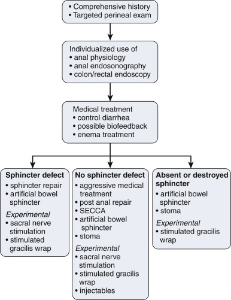

INCONTINENCE - FAECAL
DEFINITION
The uncontrollable or continual passage of faecal material due to a
variety of possible causes.
top D I A B M
I M home
INCIDENCE
Humiliating and rarely discussed; underestimated
Age
Increases with age
0.4% of adults.
Over 65 is 1.2%.
20-60% in geriatric wards.
up to 50% in rest homes.
Risk Factors
Comorbidities:
Constipation is strongest risk factor.
Irritable bowel syndrome (20%) have occasional soiling.
Other colonic disorders (e.g. UC).
Cognitive impairment.
Immobility.
top D I A B M
I M home
AETIOLOGY
Physiology
Normal functional unit of
continence:
Brain - higher control.
Descending nervous tracts.
Autonomics from sacral plexus and pudendal innervation.
Bowel wall, with mucosa, puborectalis sling, pelvic floor, and a
blood supply.
The stool itself.
Aetiology
Any part of the functional unit
may malfunction.
Surgeons =
mostly concerned with sphincter complex.
Brain
Any neurological or psychological illness, especially dementia,
psychosis of any cause.
Nervous Tracts
Congenital malformations (e.g. spina bifida).
Inflammations - infectious or autoimmune (e.g. MS).
Any tumours.
Degenerations - cauda equina syndrome.
Trauma - to spine.
Metabolic - neuropathies, autonomic dysfunction and their sieves.
Iatrogenic damage.
Pelvic floor
Sling dysfunction and pelvic floor or sphincter damage of any cause
(e.g. childbirth trauma).
Bowel and anus
Inflammatory bowel diseases.
Degenerative - chronic straining may cause partial denervation.
Irritable bowel syndromes.
Anal trauma.
Stool
Too hard (constipation) - 'septic tank' syndrome where impacted
stool breaks down goes sloppy and overflows.
Too soft (diarrhoea) - many causes.
Also bile salts.
top D I A B M
I M home
BIOLOGICAL BEHAVIOUR
Varies by causes above.
top D I A B M
I M home
MANIFESTATIONS
Comprehensive History
1. Delineate form of incontinence
- gas vs stool etc
2. Stool habit
- Bristol Stool Scale: form of stool
- diarrhoea can make things worse
3. Perianal symptoms / changes
- lumps, prolapse,
4. Fecal urgency
- relates to rectal storage and sensation.
5. Medications
- those that relate to worse stool can be at fault
6. Past medical and surgical history
- e.g. cholectystectomy, bowel resections, abdominal radiation,
obstetric tears etc.
Tailored Physical
Observe
Inspect the perineum; closed at rest / lax?
- anal gaping in severe external sphincter dysfunction.
Look for deformity, scars / previous surgery.
Faecal or mucus soiling, excoriation, chronic skin changes.
Skin tags, anal fissures, prolapsing haemorrhoids.
Observe while straining
Palpate
PR examination will detect impacted stool, assess tone and strength
of the anal sphincter.
Anal gaping on withdrawal of the examining finger suggests external
sphincter denervation.
Palpation while squeezing and straining to determine movement of
sphincter complex
- differentiate anal movements and puborectalis movements.
top D I A B M
I M home
INVESTIGATIONS
Colonoscopy
At least in those >50y
Anal ultrasound
When guided by suspicion, e.g. ?subtle sphincter defect.
Direct imaging of the anal sphincters to exclude anatomical
anomalies.
MRI
Sphincter complex
Manometry
Tests integration of the functional unit of defecation - both motor
and sensory components.
Allows assessment of expulsion force, resistance, anorectal sensory
response to arrival of rectal contents.
Electrophysiology
E.g. ?pudendal nerve injury.
Functional test of muscle activity.
Dynamic assessment
Saline continence test.
Defecometry - measure expulsion force and look for paradoxical
contraction of the external anal sphincter (anismus).
Defecography - radiologically examine expulsion of contrast.
top D I A B M
I M home
MANAGEMENT
Principles
Treat underlying causes
Warn patient that outcomes are often unsatisfactory.

Medical
Control If diarrhoea is present
Loperamide +/- codeine
--> inhibit nervous reflexes which cause intestinal propulsion
and tighten the EAS.
- effective in many patients.
- can try loperamide 2mg mane up to 4x4mg daily
Bulking agent (metamucil)
- aids rectal retention of stool
Rapid intestinal transit may -> diarrhoea in part due to
malabsorption of bile acids.
- eg after cholecystectomy or right hemicolectomy.
- bile acid-binding resin cholestyramine (4-16mg dily in divided
doses) with loperamide may help in this case.
- clonidine (a2 agonist) restores sympathetic tone in diabetic
diarrhoea.
Small doses with slow increases helps to avoid bloating and pain
complications of these meds.
If impaction is present
Aid evacuation followed by bulking agents and laxatives.
Diet
Avoid feeds causing urgency.
E.g. lactose intolerance.
Food diary and eliminate offending agents.
Enemas
Some forms are amenable to this.
Washout/ tap water syringe enema after stool for pts who leak small
amounts after defecation.
Fleet then rinse out container; can be filled 4-5 more times
as the tap water syringe holder ... until it cracks
Antegrade enemas via appendicostomy much more invasive.
- advanced specialist center option for intractable cases.
Biofeedback
Can significantly improve function.
Pelvic floor strength and coordination training; improved sensation.
Surgical
: Sphincter Repair
Sphincter Repair
Usual scenario is acute obstetric injury, anterior anal sphincter
defect.
Overlap the two ends of muscle.
Long term results disappointing
- few or no women continent at 10y
- but easy option and improves symptoms for some women.
Timing is an important consideration
- delay until all perineal tissue healed and soft
- may take 3-6 months; mother needs much emotional support; but be
firm and wait until pliable = best chance of success.
Physiologic age should not be a deterrent to repair.
- can do even in elderly.
In defined anal trauma, e.g. fistulotomy,
--> if you can delineate and overall sphincter ends, it can much
improve symptoms.
Sacral neuro-modulation is changing this area, however, as outcomes
have been variable with primary repair
Method
1. Place prone, pressure points padded.
2. Foley catheter and tape buttocks apart.
3. Curvilinear incision over perineal body from distal to verge (to
avoid an ischaemic skin flap)
4. Dissect laterally and identify ischiorectal fossa.
- medial border = EAS
5. muscle can then be traced to severed end.
- do NOT dissect off scar tissue from muscle ends
6. Same on other side.
7. Free the ends to allow overlap, lay over with 2-0 vicryl
8. Close skin; reapproximate flaps and close with simple mattress
sutures.
Post-Anal Repair
Posterior plication of the sphincter; when intact sphincter
elongated to a cylinder.
Accentuates normal anorectal angle at rest but results have been
underwhelming.
Old idea.
But still considered in expert centers when last option is a
colostomy
Artificial Sphincter
Three implanted elements connected by tubing. Cuff encircles
anus.
Connected to a pump, located in labia / scrotum.
Baseline = fluid in cuff
Released to allow defecation.
Infection and technical malfunction; problems up to 35% lead to
explant.
For those with completely defective sphincters, only other option is
colostomy, so worth consideration and discussion.
SECCA
Calculated heat injury to sphincters.
May promote scarring and remodelling.
Soon will be available again
Targeted at pts with intact sphincter and minor leakage.
Colostomy
Recommended when all other optinos fail in practice and patients
chained to toilet.
Must not be placed in a crease where quality of life will be worse.
Must be able to see the bag
Stoma nurse consultation essential.
Stimulated Graciloplasty
Deatch gracilis, wrap around anus; preserve proximal nerve and blood
supply.
Add a stimulator, no longer available widely; gets infected so
enthusiasm reduced.
Sacral Neuromodulation
SNM. Approved.
2-stage procedure.
Place a lead into S3 or S4 foramen and connect to temporary external
stimulator.
Permanent can be placed 2-3 weeks latter beneath fat pad of upper
buttock if temporary successful.
For patients with intact but suboptimal functioning sphincters and for pts with defects.
Significant improvements in incontinence scores and QOL.
Injectabls
Not approved but studies ongoing.
top D I A B M
I M home